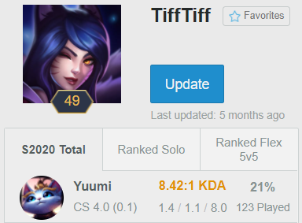
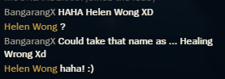
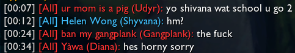

Before reading, you should know that I am a homosexual cis male. Yes, this is kinda important. It's also helpful to have a basic understanding of League of Legends, but I'll try to make it accessible regardless.
After almost a decade of playing League of Legends, I decided to change my IGN to Helen Wong. This is in part a homage to a G2G seller who went by the name HellenWong (which was already taken in League) and sold ranked-ready smurf accounts, and in part because I kinda liked the idea of donning a female name and crushing everyone through smurfing. What I experienced wasn't anything like I had imagined.
To set the story, I had created an account back in 2019 named TiffTiff just to derank and see how effective AFKing on Yuumi was (note: did the job a little too well). TiffTiff is pretty on the nose when it comes to personifying an e-girl, but because I was in the lowest of the low within the ranked brackets, the treatment I got was barely any different than using a more-unassuming name. Sometimes I get people calling me by my IGN instead of my champion n ame, in a game where people refer to each other by who they're playing 99% of the time, but that's more because I gained notoriety being a deranker than being a female. I had played aroudn 120 games on Yuumi with a 21% winrate on that account but never really noticed anything unusual, although I was more or less not really paying attention to the game in general. This is in part due to people in the elo not being overly neurotic about winning, plus there's a generally higher female presence in the lower brackets. Not saying women are inherently worse at the game, it's just how things are right now. Regardless, TiffTiff made for some funny moments here and there, but they had little to do with how people perceived the name itself.
Enter Helen Wong. Well, before Helen came to being, I'd been playing on a 3-4 year old high Diamond account that went by Burgi. A pretty generic name by all means, and a name that my BF and I decided on to match (since he went with Tendi). After a couple years of using that name, I decided to change it on a whim because I never really liked the name in the first place, and like I stated above, I found it amusing dicking around in low elo with a blatantly female persona. I went with the TiffTiff strategy of deranking to a low rank, but stopped at around low bronze because I mainly just wanted to duo with my friends/boyfriend. Not to mention, it's really difficult to maintain Iron (the lowest tier) whilst winning a few games every now and then, so I'm saving that process when the end of the season draws near.
At this point in the game, I was already in Bronze, so people were relatively less casual about the game. This is where people actually start to care about winning or losing, and who's performing well and who isn't. A lot of these games, I get a lot of positive attention. People cheering on for Ms. Wong and explicitly saying my name over the champion I'm playing. I definitely get a lot less of "Wow Caitlyn, you're smurfing on them pretty hard." Rather, I get quite a bit of "You're amazing Helen," or, "That Wong can do no wrong!" Without context, this seems like a pretty nominal difference, but I can assure you that for almost a decade of playing, I have been called my IGN instead of my champion's name maybe 2-3 times at most, even when I was playing in the higher elos where I'd constantly run into the same people over multiple games. With Helen Wong, I get directly name-dropped every few games. This is a MASSIVE difference that I've recognized when talking to other female gamers who have a noticeably female IGN, but for those people, this is what they have to constantly deal with. I have the luxury of not actually identifying with name I chose and being privileged with being a cis male gamer. I don't have to worry about creeps and people acting strangely around me if I were to join voice chats on a whim. I don't have to have my everyday leisurely gaming experiences tainted by people who want to harass me for my gender. Granted, I have experienced some of these things when I'd mainly play with other homosexuals, but that's a conversation for another time. Regardless, it rubs me the wrong way when someone refers to me by my IGN over my champion's name, like they've taken a specific liking towards the person behind the avatar.
It gets a lot more noticeable when I play in the higher elos. While my ranked MMR is around Bronze/Iron, my normals MMR is around Diamond-Challenger (which isn't as meaningful since people don't play their 100% in non-ranked games, but they're still on the other end of the skill spectrum). Of the few games I've played in that skill bracket under Helen Wong, I definitely got noticed almost every single game. On one hand, people on my team would praise me to no end, commenting on how remarkable I was, even in games where I wasn't even doing the best on my team. I'd also get asked to be added through poor attempts at flirting a lot more, but others are usually quick to call those people out, thankfully. Wish I took screenshots of those instances.
On the other hand, I find that people tend to play more aggressively against you because of what I like to call the 'e-girl debuff.' This usually comes in the form of getting ganked by the enemy jungler a lot more than usual, even if it sets them behind. This is something I have witnessed when playing with other female gamers, and it gets really bad when it gets paired with either vitriol or pathetic attempts at flirting in the chat. I've had plenty of games where I was playing with other women who, despite being of comparable skill level, had to suffer getting camped and underperform while the rest of us would be at an advantage, just because the enemy team would decide to put their efforts into focusing her. It sincerely does not make for an enjoyable experience.
I cannot explain why Helen Wong made such an impact because I don't fully understand myself. Understandably, a large part of it is witnessing a 'female' gamer performing well, in a game where the higher elo brackets are predominately male. It's also rare to see women playing champions outside the so-called "e-girl" category, so the combination of the two really stood her apart from other girls who pop up in the game. I also believe part of it comes from the fact that Wong is a blatantly Chinese last name, and men playing League of Legends tend to be part of the group that fetishizes Asian women. I don't have any direct proof of this, but most people understand that weeaboos tend to have an affinity for Asian women, and League tends to attract that kind of people with how they market.